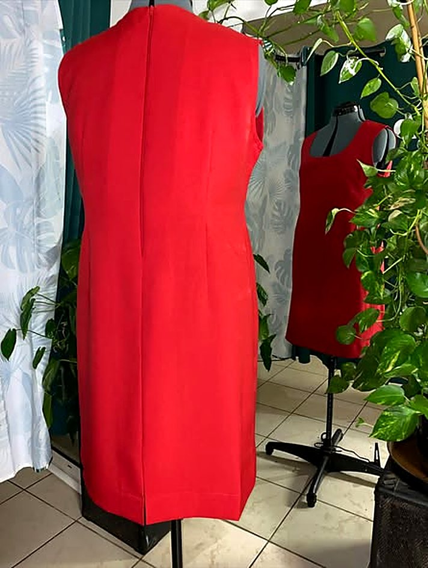
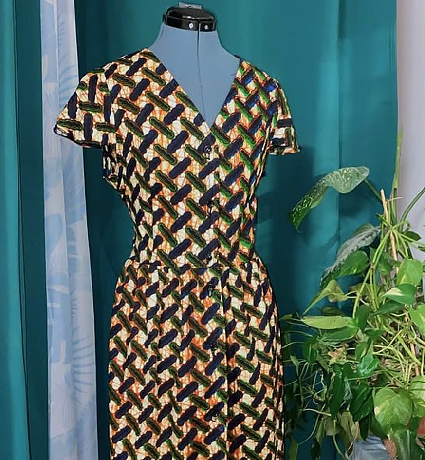
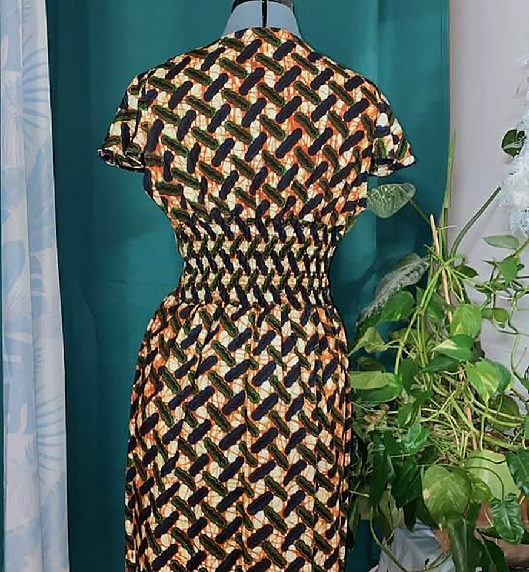
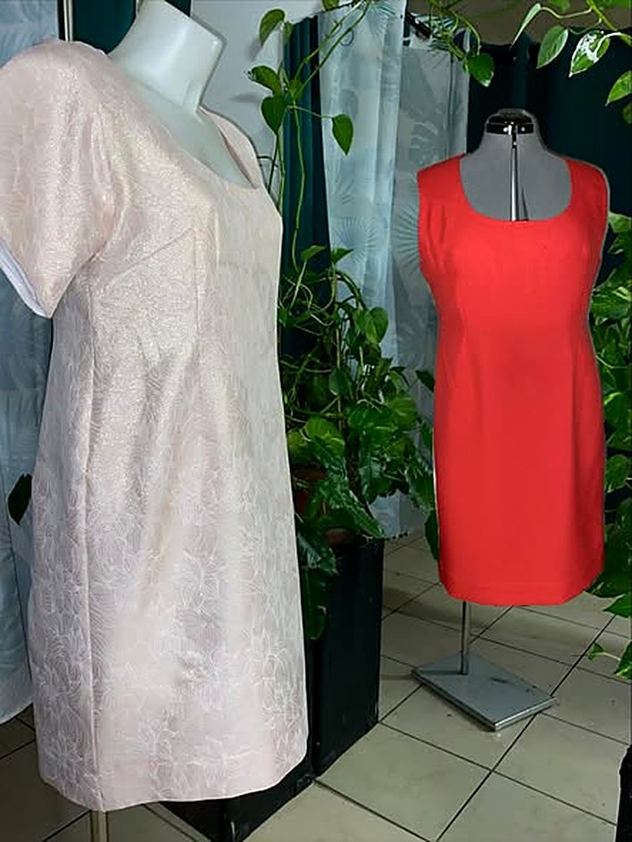
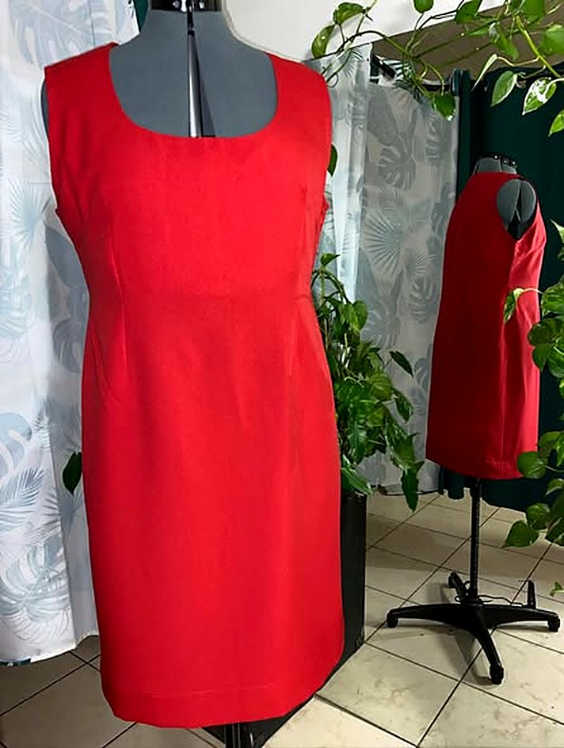
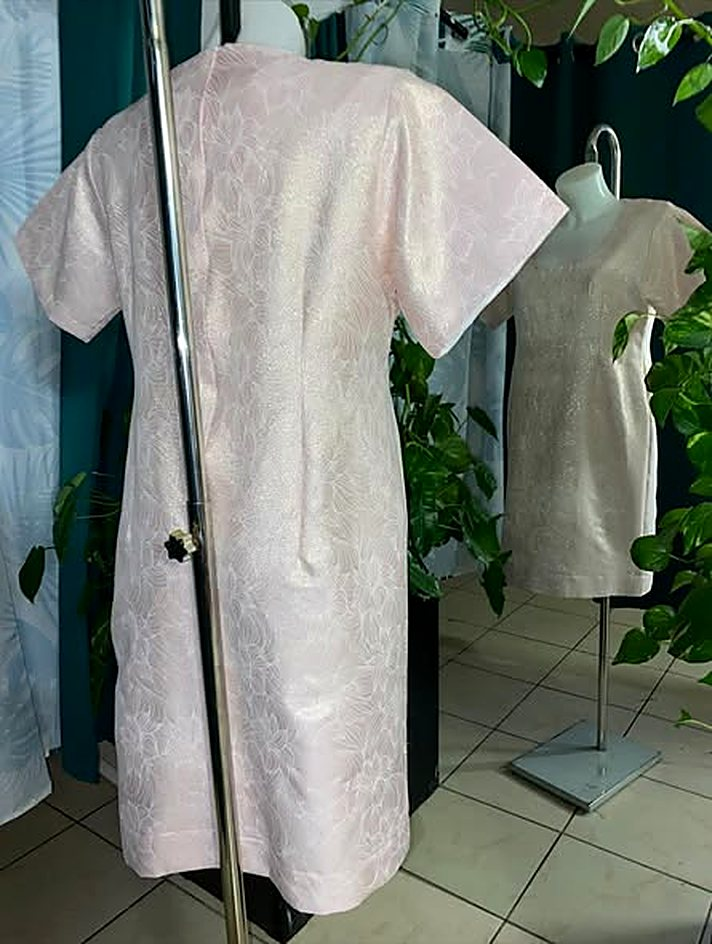
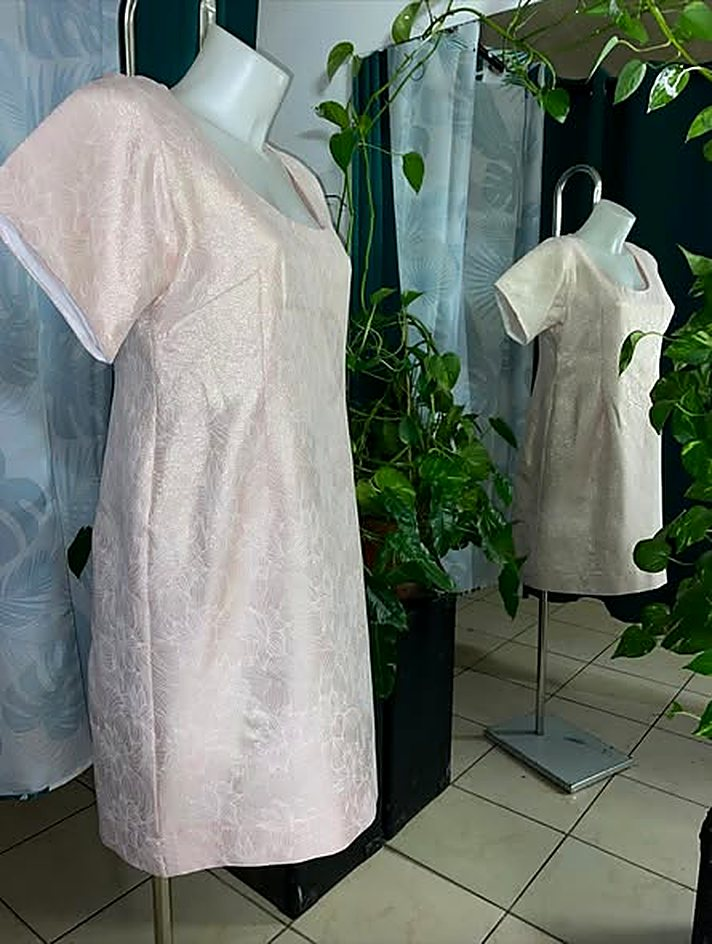

À votre service pour sublimer vos tenues : créations sur mesure, confection et retouches, pensées pour vous, selon vos envies et votre style.
Racontez-moi votre projet →Voir les créations


Chez Coutur'Art, chaque pièce est pensée et réalisée avec soin, de la coupe aux finitions : une robe pour le travail comme pour les sorties, une tenue de fête qui illumine la soirée.
Et avec un même tissu, parfois plusieurs histoires : chaque mètre peut révéler plusieurs styles.
Quelques pièces cousues à Sainte-Clotilde. Touchez une photo pour la voir en grand.




Robes, chemises, ensembles : une pièce unique imaginée avec vous, ajustée à votre silhouette.
Vos vêtements ajustés pour qu'ils vous aillent parfaitement, au quotidien comme pour une grande occasion.
Des tenues de personnages confectionnées sur mesure, avec le souci des couleurs et des finitions.
Votre demande arrive toute prête chez Nancy, qui vous répond pour en parler.
« Je m'appelle Nancy, et la couture fait partie de ma vie depuis plus de 25 ans. Tout a commencé à Madagascar. »
Aujourd'hui à Sainte-Clotilde, Nancy partage aussi sa passion lors d'ateliers couture solidaires, comme la création de coussins-cœur à l'Étang-Salé aux côtés du Groupe CRC, et donne vie aux costumes les plus élégants, jusqu'aux cosplays de l'Otaku City.